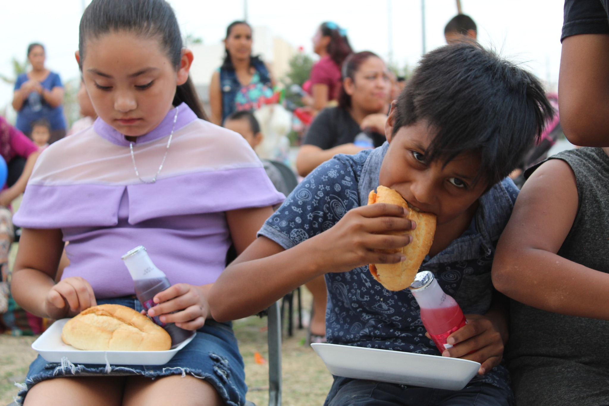
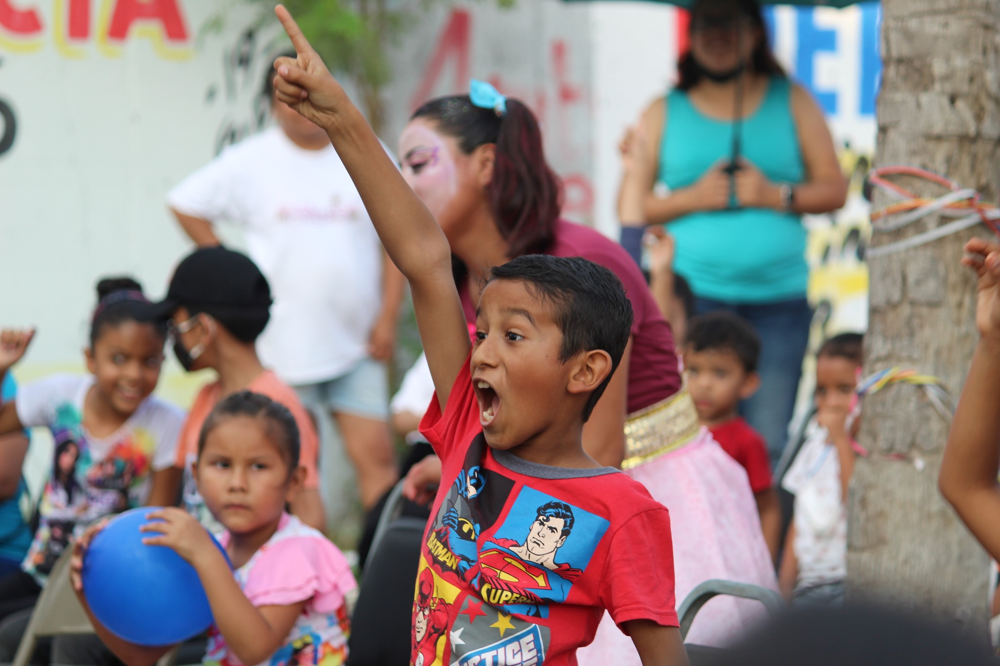
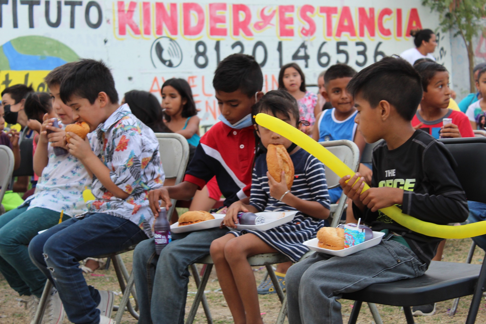

En Destellos de Misericordia, creemos en el poder de la compasión y la solidaridad para transformar vidas. Somos una asociación civil sin fines de lucro dedicada a iluminar el camino de los niños en situación de vulnerabilidad, ofreciéndoles no solo alimento gratuito, sino también esperanza, amor y la promesa de un futuro más brillante. Nuestra misión es simple pero impactante: alimentar cuerpos, nutrir almas y construir puentes hacia un mañana lleno de oportunidades. Cada día, nos esforzamos por romper el ciclo de la desnutrición infantil, trabajando incansablemente para asegurarnos de que ningún niño se acueste con hambre.
QUIERO AYUDARTu generosidad nos permite llegar a más niños. Cada donación, por pequeña que sea, hace una gran diferencia.
Únete a nosotros en la travesía de brindar amor y apoyo. Tu tiempo y habilidades pueden cambiar vidas.
Comparte nuestra causa en tus redes sociales y con amigos. Cuantas más personas conozcan nuestro trabajo, más vidas podemos tocar.